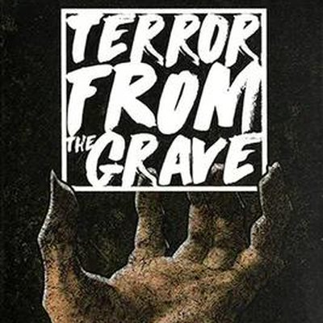

Killer · 14 mapas con datos
🇪🇸 ES · 🇬🇧 EN · 🇫🇷 FR · 🇩🇪 DE · 🇮🇹 IT
Sobre 531 partidas registradas, la Final Girl gana el 50,5% de las veces contra Terror from the Grave. La media de todo el juego es 65,4%, así que está por debajo: es de los duros.
Segunda viñeta, de la serie 2. El killer son zombis, con Patsy como Final Girl.
Formato corto de género zombi: la presión no viene de un enemigo fuerte sino del número.
Datos de juego tomados de la Final Girl Wiki, bajo licencia CC BY-SA.
Porcentaje de victoria de la Final Girl en cada localización, con al menos 20 partidas registradas.
| Localización | Victorias | Partidas |
|---|---|---|
| Creech Manor | 68,9% | 45 |
| Mega BGCon | 60,0% | 35 |
| Station 2891 | 58,3% | 36 |
| Utopia | 58,3% | 24 |
| Camp Happy Trail | 55,4% | 56 |
| Hellscape | 54,3% | 35 |
| Falconwood | 53,1% | 32 |
| Sunnydaze Mall | 48,1% | 27 |
| Carnival of Blood | 47,6% | 21 |
| Sacred Groves | 45,2% | 42 |
| USS Konrad | 45,0% | 20 |
| Wingard Cottage | 42,9% | 35 |
| Wolfe Asylum | 34,8% | 46 |
| Maple Lane | 30,6% | 36 |
De la que más castiga a la que menos. Mínimo 20 partidas.
| Dark Power | Victorias | Partidas |
|---|---|---|
| Legion | 37,7% | 167 |
| Super Horde | 51,2% | 164 |
| Runners | 61,8% | 170 |
La peor papeleta es Legion: con ella encima la partida se gana solo el 37,7% de las veces, sobre 167 partidas.
De la que más castiga a la que menos. Mínimo 20 partidas.
| Cartas de Finale | Victorias | Partidas |
|---|---|---|
| Unrevealed | 14,8% | 209 |
| Their Numbers Are Endless | 67,7% | 99 |
| They've All Been Bitten | 77,5% | 120 |
| I'm Overwhelmed | 79,6% | 93 |
La peor papeleta es Unrevealed: con ella encima la partida se gana solo el 14,8% de las veces, sobre 209 partidas.
Las cuatro aperturas y cuándo usar cada una están en la estrategias de salida. Para cruzar a este killer con cualquier otro mapa, la matriz completa está en las estadísticas.